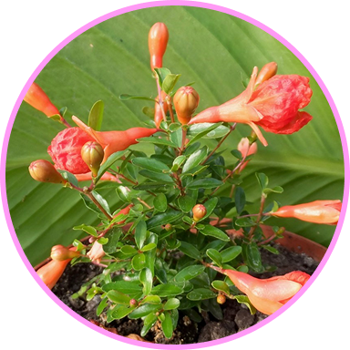
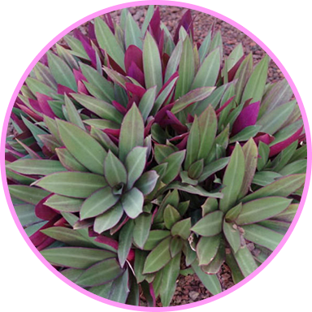
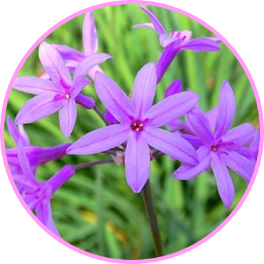

Pomegranate: Symbolizes diverse concepts, notably life, fertility, and abundance due to their many seeds
On the side of Art closest to DFA

Trailing lantana: Symbolizes liveliness, joy, and transformation, due to its vibrant, ever-present blooms and ability to thrive in harsh conditions
By the door of Art closes to DFA
Moses in the cradle: Symbolizes divine protection, hope, and resilience because its name and visual appearance are a direct reference to the biblical story of baby Moses
By the Art door closest to the DFA

Society garlic: Symbolizes practicality, social grace, and protection from pests and negative energies stemming from its use as an ornamental plant
Across the street from the art building by the creek

Lantana: Symbolizes liveliness, energy, joy, and good fortune due to its vibrant colors and resilience, while its diversity and transformation are also reflected in its meanings
By the Seven Mustangs Statue
Thank you for joining me on my adventure! I hope you learned some awesome facts and found a new love for the plants surrounding the ART building!